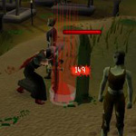
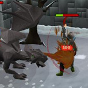
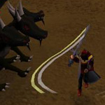
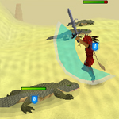
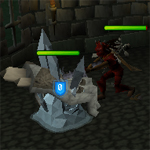

")
Spezialangriffe
Spezialangriffe
Nur RuneScape-Mitglieder können Spezialangriffe benutzen. Wenn ihr euch anmeldet, könnt auch ihr dieses Feature nutzen.
![[Bild]](../../img/main/kbase/combat/special_attacks/special_attack_bar1.gif) Ein paar Waffen auf RuneScape bieten ihrem Benutzer die Möglichkeit, Spezialangriffe auszuführen. Diese Angriffe haben verschiedene Effekte, von temporären Verbesserungen eurer Fertigkeiten bis hin zu erhöhtem Schaden.
Ein paar Waffen auf RuneScape bieten ihrem Benutzer die Möglichkeit, Spezialangriffe auszuführen. Diese Angriffe haben verschiedene Effekte, von temporären Verbesserungen eurer Fertigkeiten bis hin zu erhöhtem Schaden. Wenn man eine dieser Waffen handhabt und sich das Kampffenster ansieht, wird man einen Balken für den Spezialangriff der jeweiligen Waffe finden. Wenn man auf diesen Balken klickt, wird der Spezialangriff eingeleitet und verbraucht ein bisschen Spezialangriffskraft.
Die jeweiligen Spezialangriffe verbrauchen eine unterschiedliche Menge eurer Spezialangriffskraft. Falls ihr nicht genug übrig habt, könnt ihr den Angriff nicht ausführen. Die Spezialangriffskraft füllt sich mit der Zeit wieder auf.
Ihr könnt außerdem Spezialangriffstränke benutzen, um pro Dosis ein Viertel eurer Spezialangriffskraft wiederherzustellen (der Trank kann nur einmal pro 30 Sekunden benutzt werden).
| Magie-Langbogen / Magie-Kompositbogen Kraftschuss Dieser Angriff nutzt die volle Kraft des Bogens und erhöht die Chance auf einen Treffer. |
![[Bild]](../../img/main/kbase/combat/special_attacks/magic_longbow.jpg) |
Runit-Wurfaxt Kettenwurf Dieser Angriff sorgt dafür, dass die Wurfaxt in Multikampf-Gebieten mehrere Ziele trifft und ihnen Schaden zufügt. |
![[Bild]](../../img/main/kbase/combat/special_attacks/rune_throwing_axe.gif) |
| Drachen-Dolch Durchstich Führt zwei schnelle Angriffe hintereinander auf den Gegner aus. Diese Angriffe sind etwas präziser und fügen dem Gegner etwas mehr Schaden zu. |
![[Bild]](../../img/main/kbase/combat/special_attacks/dragon_dagger1a.jpg) |
Magie-Kurzbogen Schnellschuss Führt zwei schnelle Schüsse auf das Ziel aus. Dieser Angriff ist etwas ungenauer, da er so schnell ausgeführt wird. |
![[Bild]](../../img/main/kbase/combat/special_attacks/magic_shortbow.jpg) |
| Drachen-Langschwert Spalter Dieser Angriff wird mit viel Kraft ausgeführt und erhöht somit den Schaden, den ihr dem Gegner zufügt. |
![[Bild]](../../img/main/kbase/combat/special_attacks/dragon_longsword2a.jpg) |
Drachen-Streitaxt Wüterich Dieser Angriff senkt Angriff, Fernkampf, Verteidigung sowie Magie und erhöht dafür eure Stärke. |
![[Bild]](../../img/main/kbase/combat/special_attacks/dragon_battleaxe.gif) |
| Excalibur Sanktuarium Dieser Spezialangriff schützt euch, indem er eure Verteidigung erhöht. Excalibur Extrem Noch größerer Verteidigungs-Bonus und beschleunigte Heilung verlorener Trefferpunkte für kurze Zeit |
![[Bild]](../../img/main/kbase/combat/special_attacks/excalibur.jpg) |
Runit-Kampfklauen Klauenstoß Dieser Angriff ist sehr kraftvoll und präziser, dafür aber ein bisschen langsamer. |
![[Bild]](../../img/main/kbase/combat/special_attacks/rune_claws1a.jpg) |
| Granit-Hammer/Granit-Streitkolben Blitzschlag Dies ist einfach ein zusätzlicher, sofortiger Angriff ohne weitere Besonderheiten. |
![[Bild]](../../img/main/kbase/combat/special_attacks/granite_maul.gif) |
Drachen-Streitkolben Erschütterer Dieser Angriff ist sehr kraftvoll, allerdings wird die Trefferchance etwas gesenkt. |
![[Bild]](../../img/main/kbase/combat/special_attacks/dragon_mace1.jpg) |
| Drachen-Speer / Zamorak-Speer Drachenstoß Dieser Angriff fügt dem Gegner keinen Schaden zu, sondern wirft ihn ein bisschen zurück und betäubt ihn für kurze Zeit. |
![[Bild]](../../img/main/kbase/combat/special_attacks/dragon_spear.gif) |
Drachen-Hellebarde Schlitzer Führt einen verheerenden Schlag gegen euren Gegner aus. Bei großen Gegnern fegt die Hellebarde hin und her und fügt ihm zusätzlichen Schaden zu. |
![[Bild]](../../img/main/kbase/combat/special_attacks/dragon_halberd1a.jpg) |
| Höllenpeitsche Ausdauertransfer Dieser Angriff ist präziser und zieht dem Gegner bei einem erfolgreichen Treffer 25 % seiner Ausdauer ab und überträgt sie auf euch. |
![[Bild]](../../img/main/kbase/combat/special_attacks/abyssal_whip1a.jpg) |
Drachen-Krummsäbel Drachenriss Dieser Angriff ist präziser und macht es dem Gegner bei einem erfolgreichen Treffer für 5 Sekunden unmöglich, Schutzgebete oder Rückschlagflüche zu benutzen. |
![[Bild]](../../img/main/kbase/combat/special_attacks/dragon_scimitar2a.jpg) |
| Drachen-Axt Drachenprügler Dieser Angriff macht euren Gegner benommen, wodurch seine Stufe in Verteidigung und Magie temporär sinkt. |
![[Bild]](../../img/main/kbase/combat/special_attacks/dragon_axe1.jpg) |
Magierfluch Seelenschuss Der Angriff senkt die Fertigkeit Magie eures Gegners um den verursachten Schaden. |
![[Bild]](../../img/main/kbase/combat/special_attacks/seercull1a.jpg) |
| Dunkellicht Dunkelschwäche Wenn dieser Angriff trifft, senkt er die Fertigkeiten Angriff, Stärke und Verteidigung eures Gegners um 5 %. Bei Dämonen sind es sogar 10 %. |
![[Bild]](../../img/main/kbase/combat/special_attacks/darklight1c.jpg) |
Drachen-Zweihänder Drachenhieb Mit dieser Waffe kann man einen Rundumschlag durchführen, der allen Gegnern in eurer Umgebung Schaden zufügt. |
 |
| Flegel des Ivandis/Stab des Ivandis Vampirstarre Sobald ihr einen Vampir auf 50 % seiner Lebenspunkte geschwächt habt, kann dieser Spezialangriff verwendet werden, um den Vampir in der Luft einzufrieren, sodass man ihm eine Dosis von Guthix' Gleichgewicht verabreichen kann. |
![[Bild]](../../img/main/kbase/combat/special_attacks/rod_of_ivandis1a.jpg) |
Knochen-Dolch Überraschungsangriff Senkt die Verteidigung des Gegners um den angerichteten Schaden. Die Trefferchance wird erhöht, wenn der Gegner euch zum Zeitpunkt des Angriffs noch nicht bemerkt hat. |
![[Bild]](../../img/main/kbase/combat/special_attacks/bone_dagger1a.jpg) |
| Dorgeshuun-Armbrust Hinterhalt Dieser Angriff senkt die Verteidigung des Gegners um den angerichteten Schaden. Die Trefferchance wird erhöht, wenn der Gegner euch zum Zeitpunkt des Angriffs noch nicht bemerkt hat. |
![[Bild]](../../img/main/kbase/combat/special_attacks/bone_crossbow.jpg) |
Fassos Anker Brecher Dieser Angriff verdoppelt eure Trefferchance. Erfolgreiche Ausführung senkt die Verteidigung, den Angriff, Fernkampf oder die Magie des Gegners um 10 % des angerichteten Schadens. |
![[Bild]](../../img/main/kbase/combat/special_attacks/anchor.jpg) |
| Pökel-Säbel Unterwasserschlag Dieser Angriff kann nur unter Wasser benutzt werden. Die Trefferchance wird verdoppelt und erhöht eure Stärke, euren Angriff und eure Verteidigung um ein Viertel des angerichteten Schadens. |
![[Bild]](../../img/main/kbase/combat/special_attacks/brine_sabre1.jpg) |
Uralter Streitkolben Gunst des Kriegsgottes Fügt dem Gegner bei einem Treffer den vollen Schaden zu, selbst wenn er das Gebet 'Nahkampf-Schutz' aktiviert hat. Außerdem transferiert er euch so viele Gebetspunkte, wie ihr dem Gegner Schaden zugefügt habt. |
![[Bild]](../../img/main/kbase/combat/special_attacks/ancient_mace.jpg) |
| Dunkelbogen Dunkelschock Fügt dem Gegner bis zu 30 % zusätzlichen Schaden zu. Mindestschaden: 5 pro Pfeil. Drachenschock Kann nur mit Drachen-Pfeilen ausgeführt werden. Fügt dem Gegner bis zu 50 % zusätzlichen Schaden zu. Mindestschaden: 50 pro Pfeil. Beide Angriffe werden das Ziel treffen. |
![[Bild]](../../img/main/kbase/combat/special_attacks/dark_bow.jpg) |
Saradomin-Schwert Saradomins Blitz Fügt dem Gegner durch Blitzschlag 50-150 Punkte extra Magieschaden zu. |
![[Bild]](../../img/main/kbase/combat/special_attacks/saradomin_sword2.jpg) |
| Drachen-Kampfklauen Schlitzer Vier sehr schnelle Hiebe werden gleichzeitig ausgeführt, wodurch viel Schaden verursacht werden kann. |
 | Zaniks Armbrust Widerstand Fügt Spielern, die Gebete und/oder Götter-Ausrüstung benutzen, vermehrt Schaden zu (bis zu +150). Andere Gegner nehmen zusätzlichen Schaden von 30-150. |
![[Bild]](../../img/main/kbase/combat/special_attacks/zaniks_crossbow.jpg) |
| Drachen-Spitzhacke Schock Ein mächtiger Angriff, der euren Gegnern 5 % ihres Angriffs, Fernkampfs und ihrer Magie abzieht. Dauert länger als ein normal Angriff. |
![[Bild]](../../img/main/kbase/combat/special_attacks/dragon_pickaxe1a.jpg) |
Handkanone Gezielter Schuss Steigert die Wahrscheinlichkeit, einen Gegner zu treffen. Das Zielen dauert länger und die Wahrscheinlichkeit, dass die Handkanone explodiert und zerstört wird, ist höher. |
![[Bild]](../../img/main/kbase/combat/special_attacks/hand_cannon1.jpg) |
| Bestrafer-Dreizack Todeshieb Chance, einen Gegner unter Kampfstufe 50 sofort zu besiegen (nicht bei anderen Spieler, Boss-Monstern, Vertrauten oder Kreaturen, die auf eine bestimmte Art besiegt werden müssen). Beim Spielerkampf habt ihr die Chance, dem Gegner 1/3 seiner Trefferpunkte abzuziehen. |
![[Bild]](../../img/main/kbase/combat/special_attacks/penance_trident1.jpg) |
Licht-Stab Macht des Lichts Der Stab zieht eure gesamte Spezialangriffsenergie ab und umgibt euch mit einer Schutzbarriere, die Nahkampfschaden eine Minute lang um 50 % reduziert. Wenn ihr den Stab währenddessen ablegt, verfliegt auch der Effekt. |
![[Bild]](../../img/main/kbase/combat/special_attacks/staff_of_light.jpg) |
Spielerkampf-Waffen
| Statius' Kriegshammer Trümmerschlag Steigert den Schaden um bis zu 25% und senkt die Verteidigung des Gegners um 30%. |
![[Bild]](../../img/main/kbase/combat/special_attacks/statius_warhammer1.jpg) |
Vestas Langschwert Finte Steigert den Schaden um 20% und macht es dem Gegner schwer, sich zu verteidigen. |
![[Bild]](../../img/main/kbase/combat/special_attacks/vesta_longsword.jpg) |
| Vestas Speer Speerwand Verletzt jeden, der in der Nähe ist, und verhindert 5 Sekunden lang Nahkampfangriffe. |
![[Bild]](../../img/main/kbase/combat/special_attacks/vesta_spear.jpg) |
Morrigans Wurfaxt Lähmungsfluch Richtet 20% mehr Schaden an und lässt die Ausdauer des Gegners eine Minute lang mit vierfacher Geschwindigkeit sinken. |
![[Bild]](../../img/main/kbase/combat/special_attacks/morrigan_throwing_axe.jpg) |
| Morrigans Pilum Phantomhieb Fügt anhaltenden Schaden zu - ähnlich wie Gift, nur schneller. Außerdem kann der Gegner immer noch vergiftet werden. |
![[Bild]](../../img/main/kbase/combat/special_attacks/morrigan_javelin.jpg) |
Das Götterschwert
Das Götterschwert ist wahrscheinlich die mächtigste Waffe auf RuneScape, bei dessen Anblick die Gegner tatsächlich Blut und Wasser schwitzen. In der letzten großen Schlacht der Götterkriege ging es nur darum, wer die unglaubliche Macht des Schwerts an sich reißen würde. Wenn ihr die Klinge des Götterschwerts habt, könnt ihr verschiedene Griffe mit ihm verbinden, um einen jeweils individuellen Spezialangriff zu erhalten.
| Armadyl-Götterschwert Verurteilung Fügt dem Gegner 25 % mehr Schaden zu. |
 | Bandos-Götterschwert Kriegserklärung Mit Angriff wird 10 % mehr Schaden zugefügt und die Kampffertigkeiten des Gegners werden um die zugefügten Schadenspunkte verringert. Fertigkeiten werden in folgender Reihenfolge herabgesetzt: Verteidigung, Stärke, Gebet, Angriff, Magie und Fernkampf. |
![[Bild]](../../img/main/kbase/combat/special_attacks/bandos_godsword2a.jpg) |
| Saradomin-Götterschwert Heilende Klinge Fügt Gegner normalen Schaden zu, stellt aber die Hälfte der verursachten Schadenspunkte als Trefferpunkte und ein Viertel als Gebet wieder her. Ihr werdet mindestens 100 Trefferpunkte und 5 Gebetspunkte erhalten. |
 | Zamorak-Götterschwert Eisgefängnis Bannt Gegner für 20 Sekunden an einer Stelle. |
 |

Weitere Artikel in Kampf
|
|
|
Weiterführende Informationen Wenn euch dieser Artikel nicht weitergeholfen hat, könnt ihr in den folgenden Kapiteln der RuneScape-Webseite mehr Informationen finden:
|
|